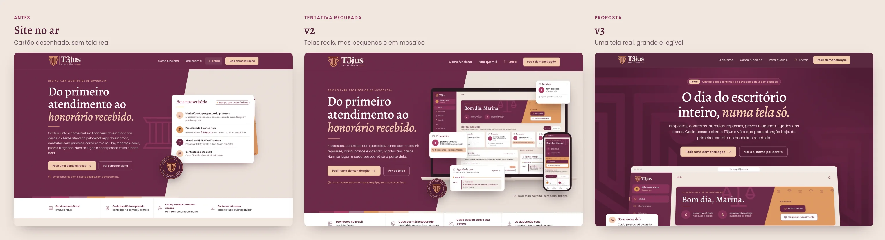
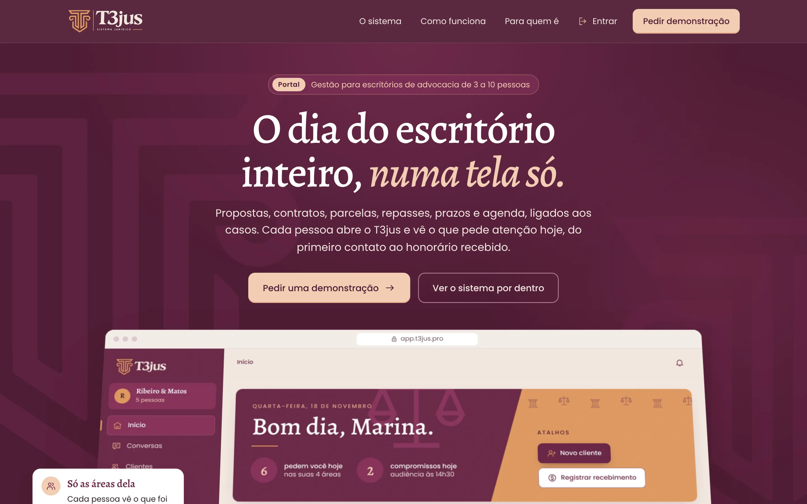
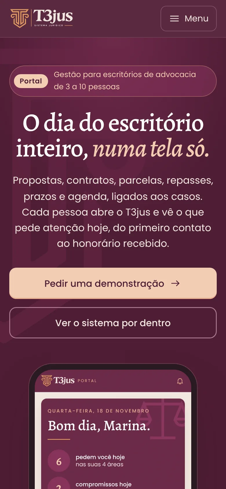
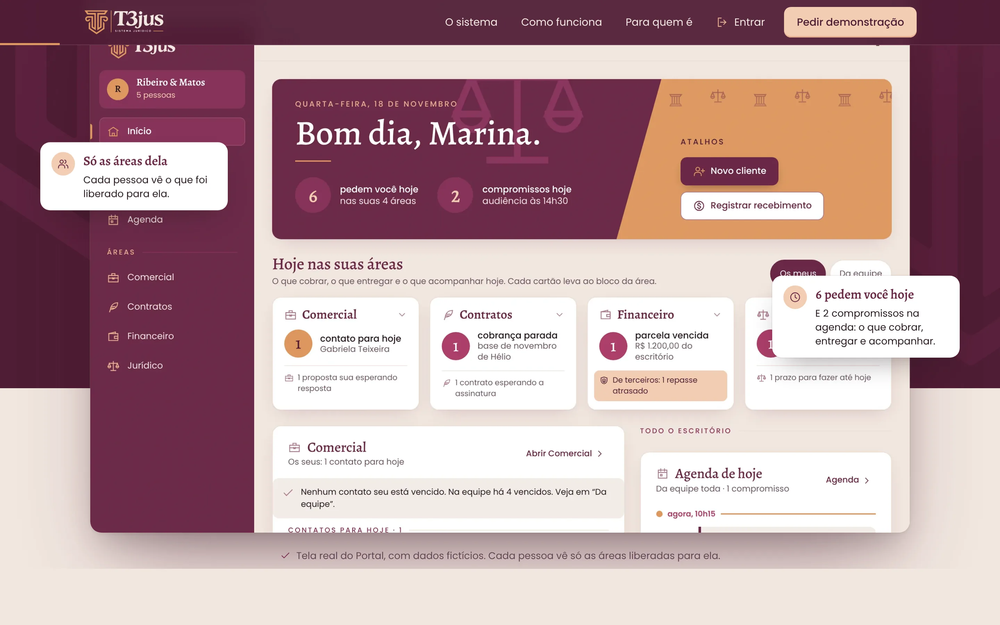
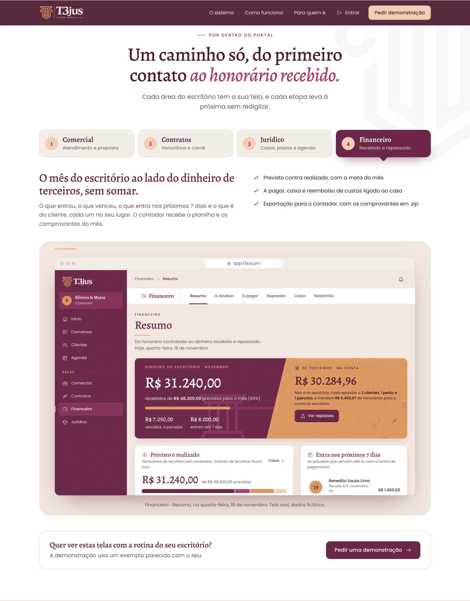
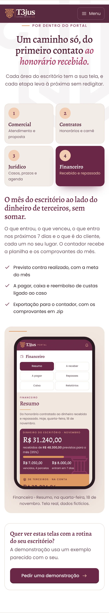
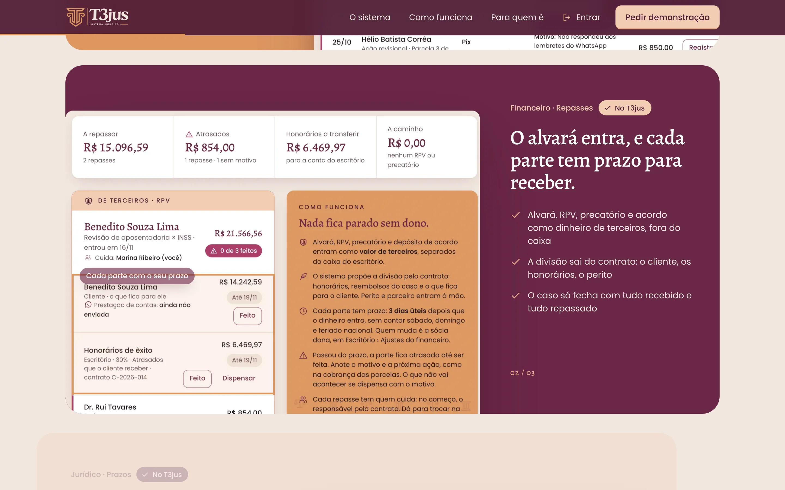
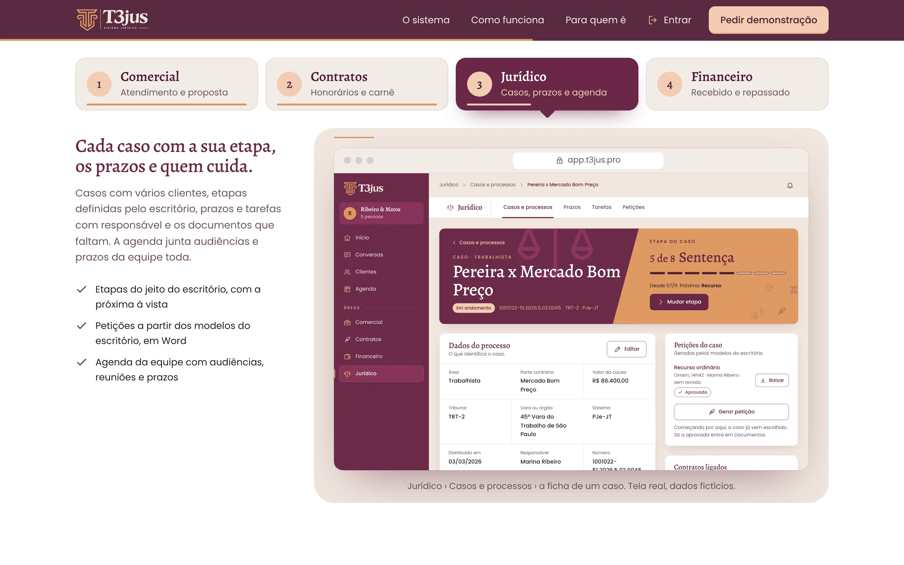

Antes e depois da abertura
Site no ar, a v2 recusada e a v3, em 1440 px.

A abertura nova



As abas trocam a tela
Quatro áreas, na ordem do caminho. Cada aba troca uma tela inteira do Portal.


O movimento
A rolagem conduz a leitura, e cada movimento aponta uma parte do produto. O vídeo mostra a página rolando em 1440 px.


As fotos da Carol
Imagens fornecidas pela Carol em 22/11/2026. Elas aparecem duas vezes, como pausa, e o produto continua sendo o centro. Não têm legenda e nada fica sobre os rostos.
A página inteira
Por que a v2 não funcionou
- O produto em quantidade, não em tamanho. Notebook, celular, três recortes e selo em 700 px; o texto do Portal ficava com 5 ou 6 px.
- A mesma abertura de antes. O mesmo corte, o mesmo título e a mesma composição: parecia o site de sempre com uma figura nova.
- A página cresceu em vez de mudar. Eram 9.000 px, e o mesmo produto aparecia em três seções, cada vez menor.
- Cartão branco e texto miúdo continuavam a base.
- Ritmo plano. Quase tudo em sal e com o mesmo cabeçalho; faltava um momento de produto na largura toda.
O que a v3 decide
- Uma tela só na abertura, grande: o Início real a 92% do tamanho, com duas anotações e a coluna do logo, grande e em tom sobre tom, ao fundo.
- Três destaques em painéis de cor inteira (âmbar, vinho, branco), com o trecho da tela quase em tamanho real. As dores do site viraram o título deles.
- Uma seção branca com quatro abas numeradas. A tela fica num palco sal, e o vinho marca os títulos e a aba ativa. O caminho em 5 passos virou a própria navegação, e cada aba troca uma tela inteira.
- Pedido de demonstração logo depois das telas, no ponto em que a pessoa acabou de ver o sistema.
- Primeiro o que existe. “A caminho” e “Planejado” vêm depois e menores, cada um com o que falta escrito.
- Fundos alternados, sem escuro além do vinho: vinho, sal, branco, sal, vinho, âmbar. O selo da chamada final aparece inteiro. Saíram a faixa de fatos, os cartões das dores e a seção de valor separada. O conteúdo foi para outras seções.
- Pessoas em dois momentos: as fotos da Carol entram num retrato largo depois dos destaques e na chamada final. Nada fica sobre os rostos, e as fotos não têm legenda de cliente.
- Movimento guiado pela rolagem: a tela da abertura assenta com profundidade e os números contam. Os destaques entram dos lados e desenham um realce no dado que importa. “Por dentro do Portal” fica parado enquanto a rolagem passa pelas 4 abas, e o selo dá uma volta. Tudo para com “menos movimento”, e o celular tem uma versão mais leve.
- Datas certas: todas as capturas foram refeitas no mesmo dia, quarta-feira, 18/11, às 10h15.
Perguntas
- O título novo pode substituir “Do primeiro atendimento ao honorário recebido.”?Recomendo sim: ele descreve a tela que aparece logo abaixo. A frase antiga continua como título da seção do Portal.
- A seção das abas parada durante a rolagem: mantém?Recomendo manter. Ela conta o caminho na ordem. O custo é que a tela fica menor nesse modo (cerca de 740 px de largura), e quem preferir pode clicar direto na aba.
- Saem do Início a faixa de fatos, os cartões das dores, o caminho em 5 passos e a seção de valor separada. Pode?Recomendo sim: o conteúdo continua nos destaques, nas abas, em “Seus dados” e na chamada final, e segue completo em Como funciona e Para quem é.
- Vídeo: vale fazer?Recomendo uma gravação de tela do Portal com dados fictícios, feita pelo gerador. As fotos já estão resolvidas com as imagens da Carol.
Conferência
- axe-core 4.14.1 (WCAG 2.2 AA) em 11 estados, em 1440 e 390 px: nenhuma violação.
- Nenhuma rolagem lateral e nenhum alvo menor que 40 px. Abas pelo teclado (setas, Home, End). Foco visível. Movimento reduzido respeitado.
- Detalhes, a origem de cada imagem e a proposta escrita das prioridades 3 a 6 estão no NOTAS.md.